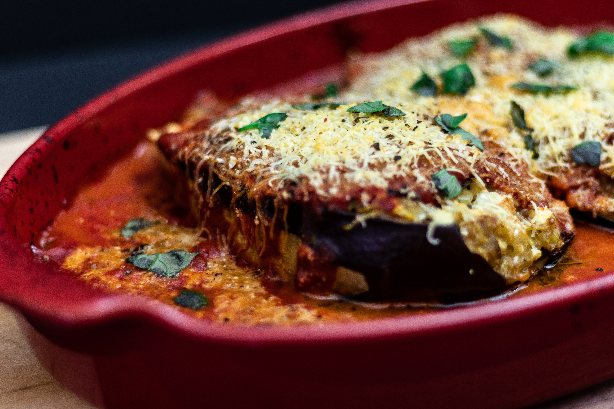
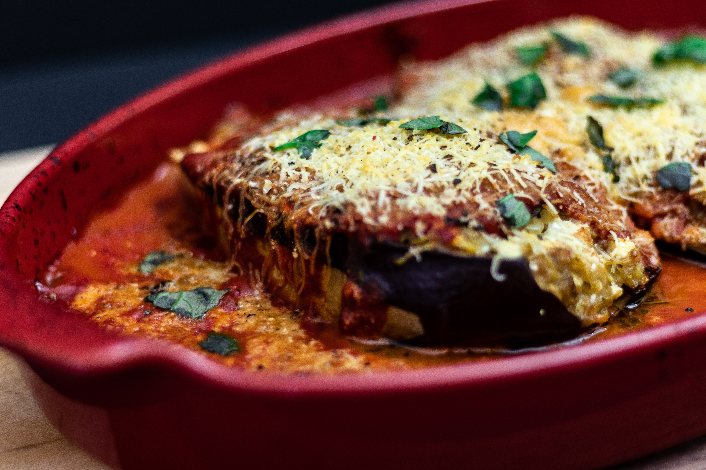

Bienvenidos a la "Divina Maldad"
Sumérgete en una experiencia culinaria única en nuestro restaurante, "La Divina Maldad". Encontrarás platos que desafían tus sentidos y despiertan tu paladar. Nuestro chef crea deliciosas obras de arte culinarias que te llevarán a un viaje gastronómico como ningún otro. ¡Ven y descubre el lado divinamente malvado de la comida!
 

Nuestra Cocina:
En "La Divina Maldad," te invitamos a explorar la diversidad de la cocina regional bonaerense. Nuestro menú es una oda a los sabores que han enriquecido esta tierra durante generaciones. Desde las icónicas empanadas y asados argentinos hasta los platillos tradicionales de la costa, como el pescado a la parrilla, cada bocado está preparado con pasión y autenticidad.
Hernán Mateo, el visionario culinario detrás de los fogones, es un chef excepcional en ascenso en la escena gastronómica internacional. Con una pasión inigualable por la innovación culinaria y un compromiso inquebrantable con la excelencia, Hernán ha forjado su camino hacia el estrellato en el mundo de la alta cocina. Su enfoque meticuloso en la combinación de sabores, texturas y técnicas únicas ha dejado a críticos y comensales por igual maravillados. Con su visión y talento, Hernán Mateo está destinado a conquistar el firmamento culinario y alcanzar las cotas más altas en el mundo de la gastronomía.
Eventos Especiales:
En "La Divina Maldad," no solo ofrecemos una exquisita comida regional, sino también un espacio perfecto para eventos especiales. Ya sea una reunión familiar, una celebración de aniversario o una comida de negocios, podemos personalizar tu experiencia para que sea única y memorable.
Visítanos:
Te invitamos a sumergirte en los sabores, la cultura y la hospitalidad de Buenos Aires en "La Divina Maldad." Esperamos verte pronto en nuestro restaurante, donde cada plato es un viaje a la riqueza de la cocina regional bonaerense. Nos encontramos en 847 Manuel Estevez Dock sud, provincia de Buenos Aires.
Nuestro menú

"Bistec a la Roberto", bistec de carne de ternera, acompañamiento de mil hojas, croqueta y tomate

"Pasta mediterranea",pasta con camarones y verduras, con queso casero y salsa de higos

"Milanesa con papas fritas",acompañada de salsa barbacoa casera y ensalada de lechuga y tomate

"Pasta a la bolognesa",pene rigati con salsa casera, receta casera

"sushitzu",45 piezas de sushi hecha con los pies, variedad, cangrejo milenario

"LuxemBurga", Hamburguesa clasica al estilo Luxemburgo

"Lomito a la Palermo", sandwich clásico con salsa artesanal de lamentos, acompañado de mayonesa casera y rúcula

"Cordero en colchon de púre delee", carne de cordero, cocinada en su propio jugo, acompañada de púre delee con salsa de arandanos

"Carne roja termino medio", para los amantes de lo crudo, carne de res termino medio cocinada en pimienta blanca, acompañada de huevo crudo y ensalada de radicheta

"SalchiChetas",salchichas parrilleras de cerdo, elaboracion artesanal, baja en grasas, acompañada de ensalada mixta y púre de papas

"Salmon a la Verillos", salmon rosado acompañados de papas al horno con esparragos

"Ñoquis a la Tete", ñoquis de pu con salsa de acelga y crema, queso y nueces
Postres, pasteleria y cafe

"Chesscake de frutos rojos" elaboracion artesanal, opciones sin lactosa, sin tacc o ATP

"Brounni de chocolate con nueces" Elaborado con chocolates suizos, podes optar por ch amargo, dulce o mixto

"Pastel mousse de chocolate",

"Donatello" Donas rellenas de chocolate, crema y mermelada de frutilla, bañadas en cobertura fantasia arcoviris

"Panqueques Americanos con frutos rojos" deliciosos panqueques esponjosos, suaves y dulces

"Latte machiato", 60% latte, suavidad, opta por sabores vainilla, canela, caramel y choco blanco

"Cappuchino" la combinacion perfecta de cafe, leche espumada y cacao chocolate

"cafe expresso" El clasico, el de siempre, opta por super fuerte, mediano o liviano

"Frapuccino" Combinacion perfecta de cafe helado con helado y crema. Opta por diversos sabores con/ sin cafe

"Malteada helada" Delisioso licuado de leche con helado, crema y agregados
"